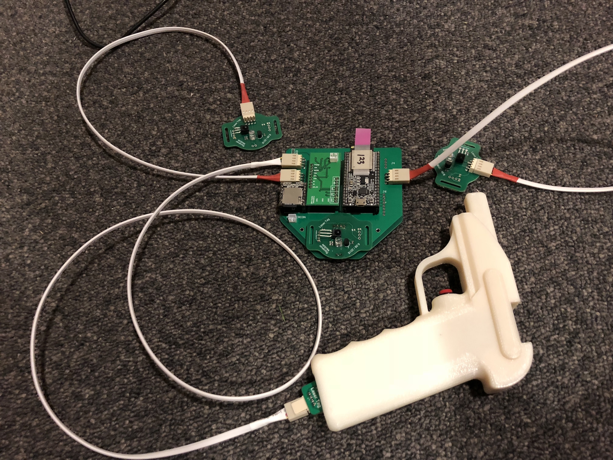

# Hardware
Three different custom printed circuit boards (PCBs) were designed, and several of each type
was subsequently ordered from a Chinese fabricator. The three types of boards are a receiver
module, an emitter module, and a master board that connects to several receiver modules and
one emitter module.
### Receiver module
The receiver modules have IR receivers that are activated when IR at a specific frequency (~56kHz)
hits them. Each player wears four receiver modules on their body - two on the arms, one soldered
directly to master board on the chest, and one on the back. Using this layout, it is possible for
a player to get hit from many angles.
### Emitter module
The emitter module is contained within the grip of the laser gun. The module produces IR pulses
tuned to the specific frequency the receivers accept. The module has an input and ouput trigger
data line to the ESP32 on the master board. The output trigger line directly connects the physical
trigger button on the laser gun to the ESP32. The input trigger line is used to start and stop emitting
IR pulses. Having the physical trigger signal and IR pulse signal be separate allows us to implement
features such as cooldown and ammo limiting.
### Master board
The master board serves as a centralized place to mount boards (ESP32, power board, DFPlayer)
and distribute power/signals.
### Connectors/Cables
Cables were cut to length, stripped, crimped, and heat shrunk

### Laser Gun
The laser gun was modeled in Autodesk inventor and designed so that it could be fitted with the IR
emitter LED inside the barrel and the driving circuitry in the handle.
Cutaway rendering of the assembly:
<img src="media/assembly2.png" width="60%" style="margin: 0 auto; display: block">